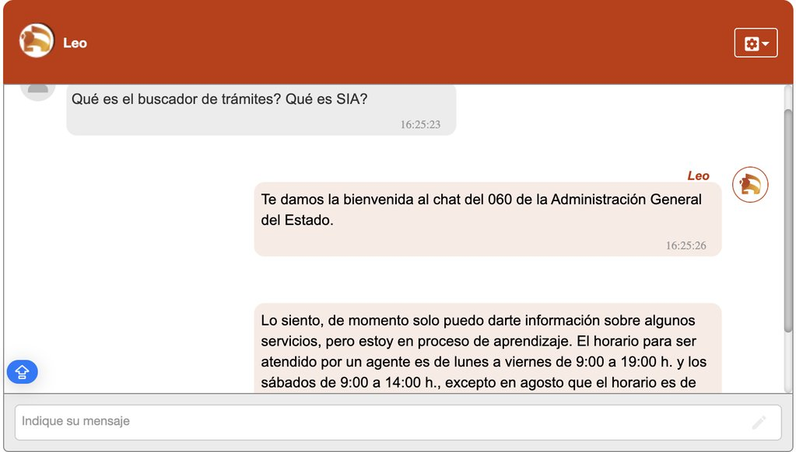
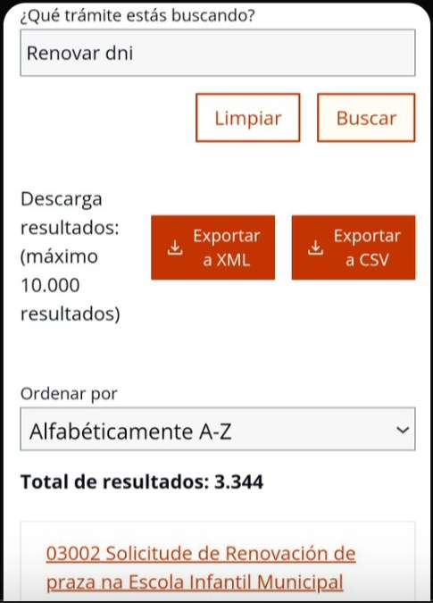
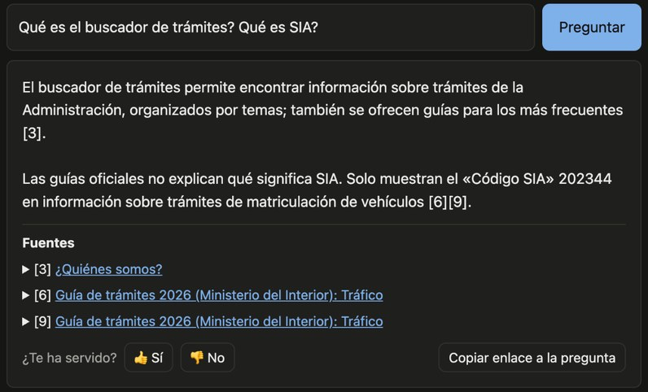

RAG / Public administration
SIA ft webchat060: Unofficial demo
An unofficial chatbot that answers questions about procedures with the Spanish administration.
After a first experiment with the BOE, I’m now presenting a chatbot that answers questions about procedures with the public administration in Spain.
The Spanish public administration’s website for citizens is the PAG (the Spanish acronym for General Access Point). It is owned and run by the Ministerio para la Transformación Digital y de la Función Pública. And it contains information on procedures, a procedure search and help channels such as the 060 phone line, a mailbox and the 060 webchat.
I noticed that the existing 060 webchat is very basic, and that the procedure search built on the Administrative Information System (SIA, Sistema de Información Administrativa) leaves a lot of room for improvement. So I built an alternative based on GPT-6 Luna, once again deployed on Microsoft Azure.

So, what is SIA? “Súper Inteligencia Artificial”, Spanish for “Super Artificial Intelligence”? Sia, the singer of “Unstoppable”? Not quite. In the words of the Royal Decree 203/2021, SIA is an “inventory of administrative procedures, services provided and other administrative actions”, classified by function and with their level of digitisation. Each administration connects its own inventory to it, and the procedure search on administracion.gob.es looks through its records: what each procedure is, which body handles it, how it is done and where, with a link. On paper, a classified and structured inventory. In practice, ask for “renovar dni” (renew my ID card) and you get 3,344 results in alphabetical order, starting with a nursery school.

My chatbot answers only from official sources, and cites the ones it uses: pages from administracion.gob.es, the 8,000 records of the SIA catalogue, the Ministry of the Interior’s guide to procedures and pages from the Ministry of Health. It can be wrong, and this is how I evaluate it. The demo is in Spanish, and also answers in English.

I also took the chance to audit the links in the 8,000 records of the SIA catalogue. Only half of them (3,947) lead to a page that works. More than one in five (1,751, or 22%) have a broken link. Another 327 lead to a home page instead of the procedure, and 1,975 could not be checked (robots.txt, bot checks or certificates). It is a single pass: a second one will confirm the broken links.
Both Sia, the Australian singer shown in the picture below, and SIA, the Spanish system, have a catalogue with many records. Sia’s records include songs like “Unstoppable” or “Genius”. Meanwhile, more than one in five of SIA’s records point to dead links, which do not sound so good.